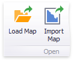

Providing Maps
This document explains how to use the default DevExpress Dashboard maps, or provide custom maps.
Default Maps
DevExpress Dashboard ships with a set of default maps showing various parts of the world. The following maps are included.
- World Countries - a world map.
- Europe - a map of Europe.
- Asia - a map of Asia.
- North America - a map of North America.
- South America - a map of South America.
- Africa - a map of Africa.
- USA - a map of the USA.
- Canada - a map of Canada.
Note
Note that the World Countries map has a lower level of detail than maps of specific regions and may not contain some countries. As an alternative, you can load a custom map with the required granularity.
To select the required default map, use the Default Map button in the Open group of the Design ribbon tab.

As an alternative, use the corresponding command in the map context menu.
Custom Maps
DevExpress Dashboard uses a Shapefile vector format to provide custom maps. Commonly, this format includes two file types.
- .shp file - holds map shapes (points/lines/polygons).
- .dbf file - contains attributes for each shape.
To open an existing shapefile, use the Load Map or Import Map button in the Ribbon, or the command in the context menu (Load Map... or Import Map...).

In the invoked dialog, locate the required .shp file. Note that custom maps created in the Cartesian coordinate system are not supported.
Note
If the map is opened using the Load Map button, the dashboard XML definition will contain the path to a map shapefile. If the map is opened using the Import Map button, the dashboard XML definition will contain the map itself.
Note
Attributes from the corresponding .dbf file located in the same directory will be included in the map automatically.
Map Attributes
After you select the default map or a custom map, you can view supplemental information (such as the name of the country, state, etc.). To do this, click the Options button next to the Attribute placeholder.

In the invoked Map Attribute Binding dialog, click Preview.

This table displays the available attributes for the current map. Each set of attribute values is related to a specific map shape.
To learn how to bind the map attribute to a data source field, see the Providing Data topic.